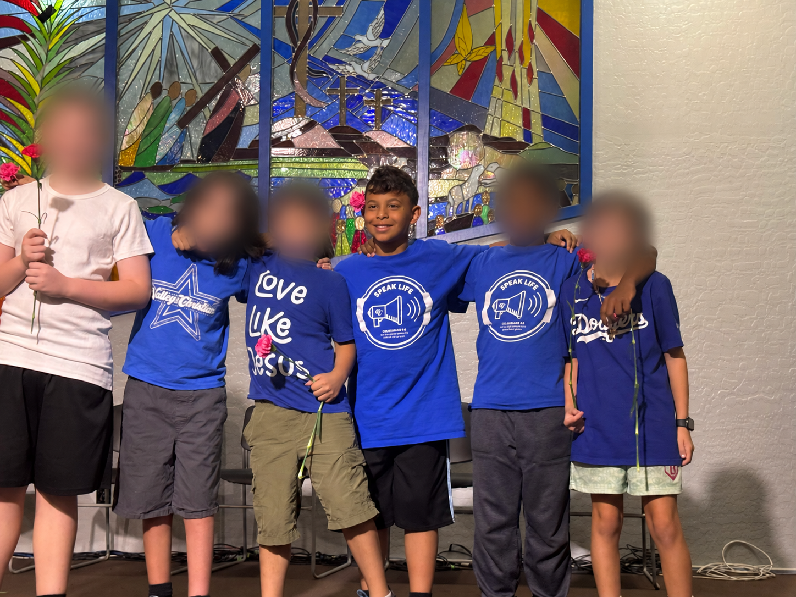

School Choice Arizona
Visit School Choice Arizona to explore its giving options.
Give with School Choice ArizonaA community to grow with
Recommend Indigo Randolph.
For my son Indigo Randolph, school is a community of friends and a source of stability. He loves theatre, baseball, and playing goalie. Our current fundraising focuses on school tuition so he can continue at the school where he belongs.
Choose an organization and recommend Indigo Randolph:
How to recommend Indigo and claim a creditTurn tax dollars into opportunity
Help support Indigo’s tuition and continuity at school through a school tuition organization (STO). Eligible gifts may qualify for a dollar-for-dollar Arizona income-tax credit, up to the applicable limits and your tax liability.
When donating, recommend
Indigo Randolph
Enter his full name in the organization’s student recommendation field or follow its recommendation instructions.
Visit School Choice Arizona to explore its giving options.
Give with School Choice ArizonaUse its donation page to make your contribution.
Give with Arizona Tuition ConnectionDonate online or read its tax-credit guide.
Give with ACSTOYour recommendation matters, but it does not guarantee an award: STOs retain control of scholarship decisions. Gifts benefiting your own dependent, or reciprocal donation arrangements benefiting one another’s dependents, do not qualify for the STO credit.
A credit reduces eligible Arizona income tax dollar for dollar. It is not a savings account or a replacement for required tax payments. These credits are nonrefundable; unused eligible credit may be carried forward under the program’s rules.
Check the limits for your tax year and filing status before donating. Original and Switcher STO credits have separate requirements; giving through several STOs does not increase your total limit. Keep your receipts and follow the organization’s tax-year and filing instructions.
You may also qualify for separate credits for eligible public-school gifts and donations to certified charitable or foster care organizations, subject to each category’s rules and your tax liability.
This is general information. Consult a tax professional about your situation.
Thank you for being part of Indigo’s community.
Meet Indigo
From theatre to baseball and soccer, Indigo has so many ways to learn, connect, and grow.

Meet his big brother
Micah attends Valley High School and is involved in choir and wrestling. We’ll share opportunities to support his activities here as those fundraisers come up.
The STO giving options above are for recommending Indigo Randolph for tuition scholarship consideration. Micah’s future choir and wrestling fundraisers will have their own details and links.